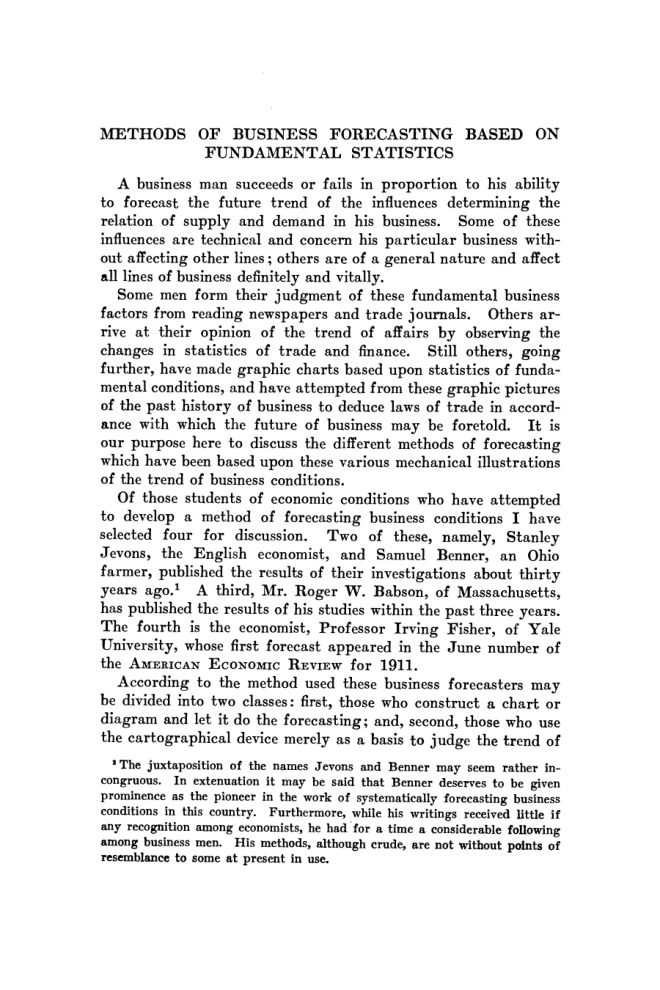

Brookmire, 1913: por que nenhum gráfico prevê sozinho os negócios
Leitura: 8 min
James H. Brookmire testa as previsões de Jevons, Benner, Babson e Fisher, conclui que nenhum gráfico prevê sozinho e propõe um quadro composto de negócios, bancos e ações dividido em ciclos de crédito.


Samuel Benner, fazendeiro de Ohio, publicou em 1875 um livro de profecias sobre preços e pânicos. Na última edição, de 1900, encerrou a previsão dizendo que estava doente havia algum tempo, que o espírito de profecia quase o abandonara, e que esperava que alguém atualizasse suas tabelas e estendesse os ciclos para o futuro distante. Em março de 1913, James H. Brookmire, de St. Louis, comenta na American Economic Review que o número de previsores em atividade mostrava que o pedido fora atendido.
O artigo examina quatro desses previsores e propõe um quinto método, o do próprio autor. O ponto de partida é prático: o homem de negócios prospera ou fracassa conforme sua capacidade de prever as influências que determinam a oferta e a procura no seu ramo. Algumas são técnicas e próprias de cada negócio; outras são gerais e atingem todos.
Que tipos de previsão existem?
Brookmire separa duas famílias. Na primeira, o previsor constrói um gráfico e deixa que ele preveja: com boas ou más safras, com política calma ou agitada, o gráfico anunciaria prosperidade ou depressão com a precisão com que o verão sucede a primavera. Na segunda, o gráfico é apenas a base do julgamento, e o previsor examina à parte as perspectivas das safras e da política. Jevons, Benner e Babson pertencem à primeira família; Fisher, à segunda.
Antes do teste, o autor fixa um postulado. Nenhum método de previsão pode ser eficiente se não levar em conta três fatores fundamentais: as safras, a política e a situação do crédito bancário. É contra essa régua que cada tentativa será medida.
O que havia de errado nos ciclos de Jevons e Benner?
Jevons queria provar que as crises comerciais eram periódicas e causadas por variações solares que determinam o clima e, portanto, as colheitas. Os astrônomos da época estimavam o período das manchas solares em dez ou onze anos, intervalo que coincidia com o das crises inglesas. Em 1878, Jevons publicou gráficos das exportações britânicas para a Índia ao longo de cento e setenta anos, com um mínimo em média a cada dez anos: quando as colheitas tropicais falhavam, o lavrador indiano não comprava os tecidos de Lancashire, e a Inglaterra entrava em crise.
Brookmire faz duas objeções. A primeira é que as conclusões dos astrônomos sobre os ciclos solares eram hipóteses, sem utilidade segura para prever quebras de safra. A segunda é que os próprios gráficos de Jevons não mostravam flutuações periódicas nas exportações para países não tropicais, como os estados da Nova Inglaterra. Ainda assim, nota, muitos economistas se apegaram aos ciclos de dez anos como se fossem lei.
“tão infundada quanto a ideia de que treze é um número de azar” (“as unfounded as the notion that thirteen is an unlucky number”)
Benner, ao contrário, confessava ignorar as causas, mas garantia a regularidade. Sua “regra de ferro fundido” dizia que um extremo sempre sucede ao outro em todas as operações da natureza e do comércio. O diagrama dos preços do ferro-gusa de 1837 a 1888 mostrava ciclos de oito, nove e dez anos e pânicos a intervalos de dezesseis, dezoito e vinte anos. Pelo diagrama, haveria pânicos em 1891, 1911 e 1918; eles vieram em 1893 e 1907. Brookmire reconhece que Benner estava no caminho certo ao dar importância aos ciclos de preços, mas observa que ele atribuía a prosperidade à tarifa alta e à moeda barata, quando o pânico de 1893 viera do medo de uma legislação de moeda barata e o de 1907, do colapso do crédito bancário.
O gráfico de áreas de Babson funciona?
Roger W. Babson apresentava sua “teoria da ação e reação” como fundamento do método. Brookmire a vê como a regra de Benner na linguagem da física, com um passo a mais: ação e reação seriam iguais. Babson traça os dados de negócios e finanças acima e abaixo de uma linha de crescimento normal e sustenta que a área de prosperidade acima da linha deve igualar a área de depressão abaixo dela.
Para o passado, a teoria é correta, porque a linha de crescimento normal é ela mesma uma média das condições passadas. Para o futuro, falha por duas razões: a política pode aprofundar e prolongar uma depressão, como entre 1892 e 1897, e uma boa safra pode interromper a descida. Pela teoria, uma área de depressão deveria ter se formado no fim de 1911 e em 1912, e não se formou; Babson explicou que as áreas tenderiam a diminuir com o estudo crescente das condições fundamentais. Brookmire conclui que o defeito está na impossibilidade de fixar de antemão a linha de crescimento normal, que precisa ser revista a cada ano, e que o gráfico, em vez de máquina de prever, é um retrato do passado. Além disso, mistura os dados bancários aos de negócios e apaga o valor que eles têm como barômetro.
E a equação de trocas de Fisher?
Fisher difere no método e nos dados. Seu diagrama da equação de trocas não pretende prever, apenas retratar o passado e o presente, e se apoia sobretudo em estatísticas bancárias. Brookmire lhe credita a primeira estimativa aproximada da velocidade de circulação da moeda. O elemento útil para a previsão seria a velocidade de circulação dos cheques: segundo Fisher, ela atingira o máximo pelo menos um ano antes de cada crise. O obstáculo é estatístico. As velocidades entre 1896 e 1909 eram interpolações, por falta de dados, e, eliminado o crescimento normal, a série não mostrava tendência confiável. Para servir aos negócios, os dados teriam de ser mais exatos e mais frequentes que as estimativas anuais.
O que Brookmire propõe?
A conclusão geral é que os altos e baixos dos negócios não voltam com a regularidade das estações e, portanto, não podem ser previstos com anos de antecedência, salvo condicionalmente. O previsor deve agir como o meteorologista, que conhece as estações mas baseia a previsão do dia nas condições existentes e a corrige quando o vento muda. As previsões de negócios devem partir das condições do mercado monetário e ser condicionadas às perspectivas da política e das safras.
O instrumento é o “gráfico composto dos fundamentos”, com três curvas: negócios, bancos e as ações de trinta e duas empresas líderes. Cada fator foi testado em separado. Alguns têm variação sazonal a eliminar, outros crescimento normal a descontar, e o preço do ferro-gusa serve bem sem ajuste. Fatores foram descartados: os vagões parados, porque são fração pequena da frota e oscilam demais; o cobre, porque metade da produção americana era exportada, e uma alta da procura externa, como no primeiro semestre de 1912, podia elevar os preços com os negócios internos parados.
Cada ciclo atravessa quatro fases: melhora, prosperidade, liquidação e reajuste. A melhora exige boas safras, política satisfatória e dinheiro fácil, e é anunciada por uma alta da bolsa de três ou quatro meses. Na prosperidade, a curva bancária cai à medida que os recursos dos bancos vão para o comércio. Quando as reservas chegam ao mínimo legal, os bancos chamam os empréstimos tomados para comprar ações, os preços dos títulos despencam e, esgotada essa fonte, os bancos deixam de renovar os créditos comerciais. Vem a liquidação geral, prevista, segundo o autor, pela queda das curvas bancária e da bolsa.
“reflete o melhor juízo dos financistas mais previdentes do mundo” (“reflect the best judgment of the world's most far-sighted financiers”)
Na minha leitura
Na minha leitura, o artigo marca a passagem da previsão como profecia para a previsão como diagnóstico. Brookmire descarta os ciclos com período fixo, de Jevons e Benner, e a regra mecânica de Babson, e fica com algo mais modesto: um painel de indicadores tratados um a um, livrados da sazonalidade e da tendência, e lidos em sequência, com a bolsa e os bancos à frente dos negócios.
O que ele não resolve é o problema que aponta em Fisher: indicadores só valem o que valem os dados. Os ciclos de quatro anos que identifica dependem de instituições, a falta de um banco central e o calendário eleitoral, e ele mesmo admite que uma reforma bancária mudaria sua duração. É uma lição de método que permanece: regularidades estatísticas dos negócios não são leis da natureza, mas efeitos de arranjos que podem mudar.
Glossário
- Gráfico composto
- combinação de várias séries estatísticas, cada uma ajustada, numa única curva de conjuntura.
- Variação sazonal
- oscilação regular de uma série ao longo do ano, que precisa ser descontada para revelar a tendência.
- Crescimento normal
- tendência de longo prazo de uma série; descontá-la mostra se a situação está acima ou abaixo do normal.
- Compensações bancárias
- valor dos cheques liquidados nas câmaras de compensação, usado como medida da atividade econômica.
- Papel comercial
- títulos de curto prazo emitidos por empresas; sua taxa indica o custo do crédito.
- Velocidade dos cheques
- número de vezes por ano que os depósitos movimentáveis por cheque são gastos.
Fontes
- Methods of Business Forecasting Based on Fundamental Statistics — James H. Brookmire (St. Louis) (pp. 43–58). JSTOR · Internet Archive (PDF)
- Edição completa, com os demais artigos: Nº 122 do Arquivo.
Documento em domínio público (EUA, publicado antes de 1931), via JSTOR Early Journal Content e Internet Archive. Resumo e comentário do autor deste site, sem afiliação com a American Economic Association. Encontrou um erro? Escreva: a correção é publicada no próprio texto, com data.
← Kinley, 1913: por que um dólar estável não cura a carestia ↑ Nº 122 · Março de 1913: números-índice, um tribunal e a previsão dos negócios